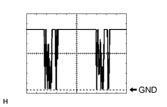
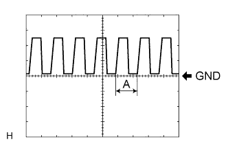

LIGHTING SYSTEM > TERMINALS OF ECU |
| CHECK HEADLIGHT SWIVEL ECU ASSEMBLY |
Disconnect the A46 headlight swivel ECU connector.
Measure the resistance and voltage according to the value(s) in the table below.
| Terminal No. (Symbol) | Wiring Color | Terminal Description | Condition | Specified Condition |
| A46-22 (E1) - Body ground | W-B - Body ground | Headlight swivel ECU ground | Always | Below 1 Ω |
| A46-14 (IGS) - Body ground | L - Body ground | Swivel motor power supply | Engine switch off | Below 1 V |
| Engine switch on (IG) | 11 to 14 V | |||
| A46-15 (IG) - Body ground | G - Body ground | Headlight swivel ECU power supply | Engine switch off | Below 1 V |
| Engine switch on (IG) | 11 to 14 V |
Reconnect the A46 headlight swivel ECU connector.
Measure the resistance and voltage according to the value(s) in the table below.
| Terminal No. (Symbol) | Wiring Color | Terminal Description | Condition | Specified Condition |
| A46-21 (SGF) - A46-22 (E1) | W - W-B | Rear height control sensor ground | Always | Below 1 Ω |
| A46-23 (SMGL) - A46-22 (E1) | G - W-B | Swivel motor LH ground | Always | Below 1 Ω |
| A46-24 (SMGR) - A46-22 (E1) | P - W-B | Swivel motor RH ground | Always | Below 1 Ω |
| A46-27 (LH-) - A46-22 (E1) | LG - W-B | Leveling motor LH ground | Always | Below 1 Ω |
| A46-28 (RH-) - A46-22 (E1) | LG - W-B | Leveling motor RH ground | Always | Below 1 Ω |
| A46-1 (SMBL) - A46-22 (E1) | V - W-B | Swivel motor LH power supply | Engine switch off | Below 1 V |
| Engine switch on (IG) | 11 to 16 V | |||
| A46-2 (SMBR) - A46-22 (E1) | B - W-B | Swivel motor RH power supply | Engine switch off | Below 1 V |
| Engine switch on (IG) | 11 to 16 V | |||
| A46-3 (LHT) - A46-22 (E1) | L - W-B | Leveling motor LH power supply | Engine switch off | Below 1 V |
| Engine switch on (IG) | 11 to 16 V | |||
| A46-4 (RHT) - A46-22 (E1) | GR - W-B | Leveling motor RH power supply | Engine switch off | Below 1 V |
| Engine switch on (IG) | 11 to 16 V | |||
| A46-7 (INIT) - A46-22 (E1) | R - W-B | Initialization signal | Engine switch on (IG), terminals LVL and GND of DLC3 connected | Below 1 V |
| Engine switch on (IG), terminals LVL and GND of DLC3 not connected | Approximately 5 V | |||
| A46-10 (SMR) - A46-22 (E1) | L - W-B | Swivel motor RH LIN communication | Engine switch off | Below 1 V |
| Engine switch on (IG) | Pulse generation (See waveform 1) | |||
| A46-11 (RH+) - A46-22 (E1) | R - W-B | Leveling motor RH LIN communication | Engine switch off | Below 1 V |
| Engine switch on (IG) | Pulse generation (See waveform 1) | |||
| A46-18 (SBF) - A46-21 (SGF) | R-G - W | Rear height control sensor power supply | Engine switch off | Below 1 V |
| Engine switch on (IG) | Approximately 5 V | |||
| A46-19 (SHRL) - A46-21 (SGF) | B-R - W | Rear height control sensor signal | Engine switch off | Below 1 V |
| Engine switch on (IG) | 1 to 4 V | |||
| A46-29 (SML) - A46-22 (E1) | W - W-B | Swivel motor LH LIN communication | Engine switch off | Below 1 V |
| Engine switch on (IG) | Pulse generation (See waveform 1) | |||
| A46-30 (LH+) - A46-22 (E1) | R - W-B | Leveling motor LH LIN communication | Engine switch off | Below 1 V |
| Engine switch on (IG) | Pulse generation (See waveform 1) |
|  |
Waveform 1
| Item | Content |
| Terminal No. (Symbol) | A46-10 (SMR) - A46-22 (E1) A46-11 (RH+) - A46-22 (E1) A46-29 (SML) - A46-22 (E1) A46-30 (LH+) - A46-22 (E1) |
| Tool setting | 2 V/DIV., 20 ms./DIV. |
| Condition | Engine switch on (IG) |
| CHECK DRIVER SIDE JUNCTION BLOCK ASSEMBLY, MAIN BODY ECU (MULTIPLEX NETWORK BODY ECU) |
Remove the main body ECU (Click here).
Measure the resistance and voltage according to the value(s) in the table below.
| Terminal No. (Symbol) | Wiring Color | Terminal Description | Condition | Specified Condition |
| A-29 (ACC) - Body ground | - | ACC power supply | Engine switch on (ACC) | 11 to 14 V |
| A-30 (BECU) - Body ground | - | Battery power supply | Always | 11 to 14 V |
| A-32 (IG) - Body ground | - | Ignition power supply | Engine switch on (IG) | 11 to 14 V |
| A-11 (GND1) - Body ground | - | Ground | Always | Below 1 Ω |
| G46-3 (GND2) - Body ground | W-B - Body ground | Ground | Always | Below 1 Ω |
Install the main body ECU (Click here).
Measure the voltage according to the value(s) in the table below.
| Terminal No. (Symbol) | Wiring Color | Terminal Description | Condition | Specified Condition |
| G46-23 (RFOG) - 2D-4 (GND1)* | SB - W-B | Rear fog light switch input | Rear fog light switch on | Below 1 V |
| Rear fog light switch off | 11 to 14 V | |||
| G47-1 (GCTY) - 2D-4 (GND1) | V - W-B | Glass hatch courtesy light switch signal | Glass hatch open | Below 1 V |
| Glass hatch closed | Pulse generation (See waveform 1 or 2) | |||
| G47-3 (HAZ) - 2D-4 (GND1) | W - W-B | Hazard warning signal switch output | Hazard warning signal switch on | Below 1 V |
| Hazard warning signal switch off | 11 to 14 V | |||
| G47-5 (HU) - 2D-4 (GND1) | LG - W-B | Headlight dimmer switch high signal input | Headlight dimmer switch in head and high | Below 1 V |
| Headlight dimmer switch in head and low | Pulse generation (See waveform 1 or 2) | |||
| G47-6 (RCTY) - 2D-4 (GND1) | R - W-B | Rear door courtesy light switch RH signal | Rear door RH open | Below 1 V |
| Rear door RH closed | 11 to 14 V | |||
| G47-8 (HF) - 2D-4 (GND1) | V - W-B | Headlight dimmer switch high flash signal input | Headlight dimmer switch in high flash position | Below 1 V |
| Headlight dimmer switch not in high flash position | 11 to 14 V | |||
| G47-15 (DIM) - 2D-4 (GND1) | P - W-B | Running light relay drive output | Headlight dimmer switch in head and high or high flash | Below 1 V |
| Headlight dimmer switch not in head and high or high flash | 11 to 14 V | |||
| G47-19 (BCTY) - 2D-4 (GND1) | G - W-B | Back door courtesy light switch signal | Back door open | Below 1 V |
| Back door closed | 11 to 14 V | |||
| G47-20 (CLTB) - 2D-4 (GND1) | P - W-B | Automatic light control sensor power supply output | Engine switch off | Below 1 V |
| Engine switch on (IG) and headlight dimmer switch in AUTO position | 11 to 14 V | |||
| G47-21 (CLTS) - 2D-4 (GND1) | R - W-B | Automatic light control sensor signal input | Engine switch off | Below 1 V |
| Automatic light control system operates | Pulse generation (See waveform 3) | |||
| G47-27 (FFOG) - 2D-4 (GND1) | G - W-B | Front fog light switch input | Front fog light switch on | Below 1 V |
| Front fog light switch off | Pulse generation (See waveform 1 or 2) | |||
| G47-28 (A) - 2D-4 (GND1) | W - W-B | Headlight dimmer switch AUTO signal input | Headlight dimmer switch in AUTO | Below 1 V |
| Headlight dimmer switch not in AUTO | Pulse generation (See waveform 1 or 2) | |||
| G47-29 (HEAD) - 2D-4 (GND1) | SB - W-B | Headlight dimmer switch head signal input | Headlight dimmer switch in head | Below 1 V |
| Headlight dimmer switch not in head | 11 to 14 V | |||
| G47-30 (TAIL) - 2D-4 (GND1) | W - W-B | Headlight dimmer switch tail signal input | Headlight dimmer switch in tail or head | Below 1 V |
| Headlight dimmer switch in neither tail nor head | 11 to 14 V | |||
| G48-3 (LCTY) - 2D-4 (GND1) | V - W-B | Rear door courtesy light switch LH signal | Rear door LH open | Below 1 V |
| Rear door LH closed | 11 to 14 V | |||
| 2D-15 (FRCY) - 2D-4 (GND1) | B - W-B | Front door courtesy light switch RH signal | Front door RH open | Below 1 V |
| Front door RH closed | 11 to 14 V | |||
| 2F-7 (TRLY) - 2D-4 (GND1) | LG - W-B | Clearance light signal output | Headlight dimmer switch in tail position | 11 to 14 V |
| Headlight dimmer switch not in tail position | Below 1 V | |||
| 2F-9 (FFGO) - 2D-4 (GND1) | W - W-B | Front fog light signal output | Headlight dimmer switch in tail and front fog light switch on | 11 to 14 V |
| Front fog light switch off | Below 1 V | |||
| 2F-19 (RFGO) - 2D-4 (GND1)* | GR-L - W-B | Rear fog light signal output | Headlight dimmer switch in tail and rear fog light switch on | 11 to 14 V |
| Rear fog light switch off | Below 1 V | |||
| 2F-40 (HRLY) - 2D-4 (GND1) | GR - W-B | H-LP LO relay drive output | Headlight dimmer switch in head | Below 1 V |
| Headlight dimmer switch not in head | 11 to 14 V | |||
| 2H-16 (TRLY) - 2D-4 (GND1) | LG - W-B | Taillight and license plate light signal output | Headlight dimmer switch in tail position | 11 to 14 V |
| Headlight dimmer switch not in tail position | Below 1 V | |||
| 2H-27 (FLCY) - 2D-4 (GND1) | R - W-B | Front door courtesy light switch LH signal | Front door LH open | Below 1 V |
| Front door LH closed | 11 to 14 V | |||
| 2K-1 (TRLY) - 2D-4 (GND1) | B - W-B | Battery power supply | Always | 11 to 14 V |
 |
Waveform 1
| Item | Content |
| Terminal No. (Symbol) | G47-1 (GCTY) - 2D-4 (GND1) G47-5 (HU) - 2D-4 (GND1) G47-27 (FFOG) - 2D-4 (GND1) G47-28 (A) - 2D-4 (GND1) |
| Tool setting | 5 V/DIV., 20 ms./DIV. |
| Condition | Glass hatch closed Headlight dimmer switch in head and low Front fog light switch off Headlight dimmer switch not in AUTO |
 |
Waveform 2
| Item | Content |
| Terminal No. (Symbol) | G47-1 (GCTY) - 2D-4 (GND1) G47-5 (HU) - 2D-4 (GND1) G47-27 (FFOG) - 2D-4 (GND1) G47-28 (A) - 2D-4 (GND1) |
| Tool setting | 5 V/DIV., 20 ms./DIV. |
| Condition | Glass hatch closed Headlight dimmer switch in head and low Front fog light switch off Headlight dimmer switch not in AUTO |
|  |
Waveform 3
| Item | Content |
| Terminal No. (Symbol) | G47-21 (CLTS) - 2D-4 (GND1) |
| Tool setting | 5 V/DIV., 5 ms./DIV. |
| Condition | Engine switch on (IG) Headlight dimmer switch AUTO Automatic light control sensor covered with a hand → Automatic light control sensor exposed to ambient light |